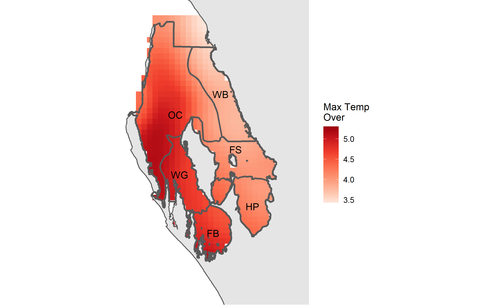

The aim of this vignette is to show a method of creating some useful SST metrics from daily data.
By following the vignette Using dbcaDHW there will be a csv of SST values and a folder structure that this analysis will utilise. Please read that vignette first if you haven’t done so.
The metrics created are best stored in rasters to maintain their spatial relationship and can always be re-extracted depending on the need. In raster format they are also in a handy format for visualisation.
First up load up other required packages, read in the previously created data and set up a few useful objects.
library(tidyverse) library(lubridate) library(raster) library(rgdal) ## read in extracted daily values dataset <- read_csv("CRW3_1_extract_yourstartdate_yourfinishdate_SST_data.csv") ## sites sites <- names(dataset)[-1] g_num <- length(sites) + 1
Next up transform into a long format, create some new variables and remove leap days. This analysis will be based on 365 days in a year so we don’t need the complexity of including the 29th of February when it rolls around. Also set up a data frame to house all the results prior to writing rasters.
## wide to long and remove leap days ndata <- dataset %>% tidyr::gather("site", "temp", 2:all_of(g_num)) %>% dplyr::mutate(year = substr(dates, 1, 4), month = substr(dates, 6, 7), day = substr(dates, 9, 10)) %>% dplyr::filter(month != "02" | day != "29") ## set up output data frame outdf <- tibble::tibble(Id = sites, hot_mean = 0, num_over = 0, mtemp_over = 0, strks_over = 0, lstrk_over = 0, max = 0, stringsAsFactors = FALSE)
Right, with the setup complete, loop over each site (which is a pixel through time) and define a past and present period. The user will have to input appropriate dates in the filter arguments below. The dates below are those used in the paper.
There is a neat gotcha below. Pay attention to the creation of the nday variable. We need to number all the days of each year consecutively in order to create a grouping variable so that we can compare all 1st of Januarys to each other etc. So if your data set starts on the 1st of January then its OK to start numbering from 1. However as can be seen in the creation of the present data set in which the period starts on the 1st of August, the numbering needed to start at 213. This all depends on what data the user has to analyse and what they define as a present starting date. Please choose appropriately.
In the past data set, also create an average temperature (e.g. average temperature for all 1st of Januarys etc). A number of metrics are then created and stored in the output data frame:
for(i in seq_along(sites)){ cat(paste0("Processing ", sites[i], "...\n")) ## define past period - UPDATE WHEN NEW DATA past <- ndata %>% dplyr::filter(dates < "2010-08-01") %>% dplyr::filter(site == sites[i]) %>% dplyr::mutate(nday = rep(1:365, length.out = length(day))) %>% #gotta match first start date dplyr::group_by(nday) %>% dplyr::mutate(avg = mean(temp)) %>% dplyr::ungroup() ## define present period present <- ndata %>% dplyr::filter(dates >= "2010-08-01" & dates <= "2011-07-31") %>% dplyr::filter(site == sites[i]) %>% dplyr::mutate(nday = c(213:365, 1:212)) #gotta match first start date ## hottest mean hot_mean <- max(past$avg) # present temps indicating which higher than threshold presenthighs <- present %>% dplyr::mutate(overthresh = ifelse(temp > hot_mean, "Y", "N")) ## rle streak <- rle(presenthighs$overthresh) ## number and lengths of streaks - CHANGE IF 5 DAYS NOT APPROPRIATE streakdf <- data.frame(sval = streak[[2]], slgth = streak[[1]], stringsAsFactors = FALSE) %>% filter(sval == "Y" & slgth >= 5) ## number over hottest mean num_over <- sum(streakdf$slgth) ## max temp over hottest mean mtemp_over <- max(present$temp) - hot_mean ## num streaks above hottest mean strks_over <- length(streakdf$slgth) ## longest streak over hottest mean lstrk_over <- max(streakdf$slgth) ## fill output data frame outdf[i, 2] <- hot_mean outdf[i, 3] <- num_over outdf[i, 4] <- mtemp_over outdf[i, 5] <- strks_over outdf[i, 6] <- lstrk_over outdf[i, 7] <- max(present$temp) }
Now its time to write all of these results to rasters. Use one of the existing img files to use as a template (sets up cell resolution, crs etc) and also write all of these results to the extraction shape file.
## grab example of orig SST img raster to use as template temp_raster <- raster("./img_data/1985/b5km_sst_v3.1_19850101.img") ## grab extraction shape file to add to e_pts <- readOGR(dsn = ".", layer = "extraction_pts_3577") ## add new metrics to extraction shape file e_pts@data <- data.frame(e_pts@data, outdf[match(e_pts@data$Id, outdf$Id),]) ## create a folder for output rasters if(!dir.exists("./sst_metrics")){dir.create("./sst_metrics")} ## write out rasters rasterize(x = e_pts, y = temp_raster, field = "num_over", filename = "./SST_metrics/num_threshold_temp_over_3577.img") rasterize(x = e_pts, y = temp_raster, field = "mtemp_over", filename = "./SST_metrics/max_temp_over_3577.img") rasterize(x = e_pts, y = temp_raster, field = "strks_over", filename = "./SST_metrics/number_strks_over_3577.img") rasterize(x = e_pts, y = temp_raster, field = "lstrk_over", filename = "./SST_metrics/longest_strk_over_3577.img") rasterize(x = e_pts, y = temp_raster, field = "hot_mean", filename = "./SST_metrics/hot_mean_temp_3577.img") rasterize(x = e_pts, y = temp_raster, field = "max", filename = "./SST_metrics/max_temp_3577.img")
With the data stored as rasters they can easily be turned into visualisations by adding in some additional vectors representing regions and coastlines etc.
